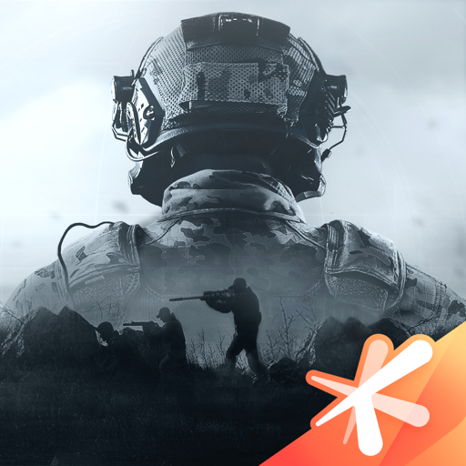
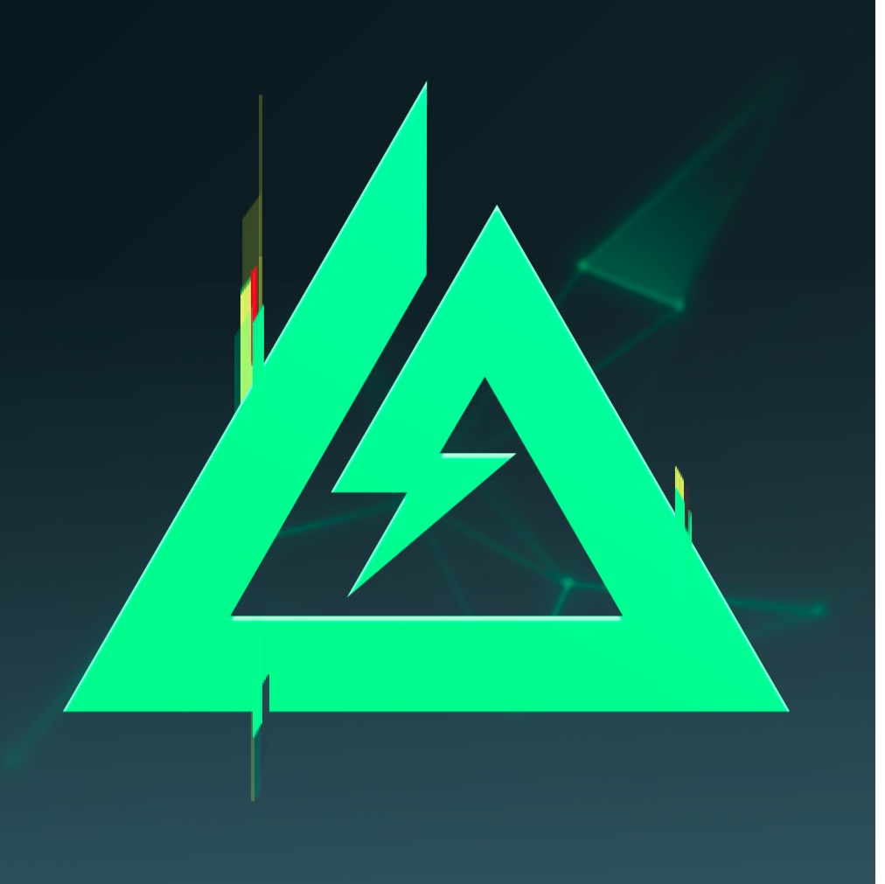
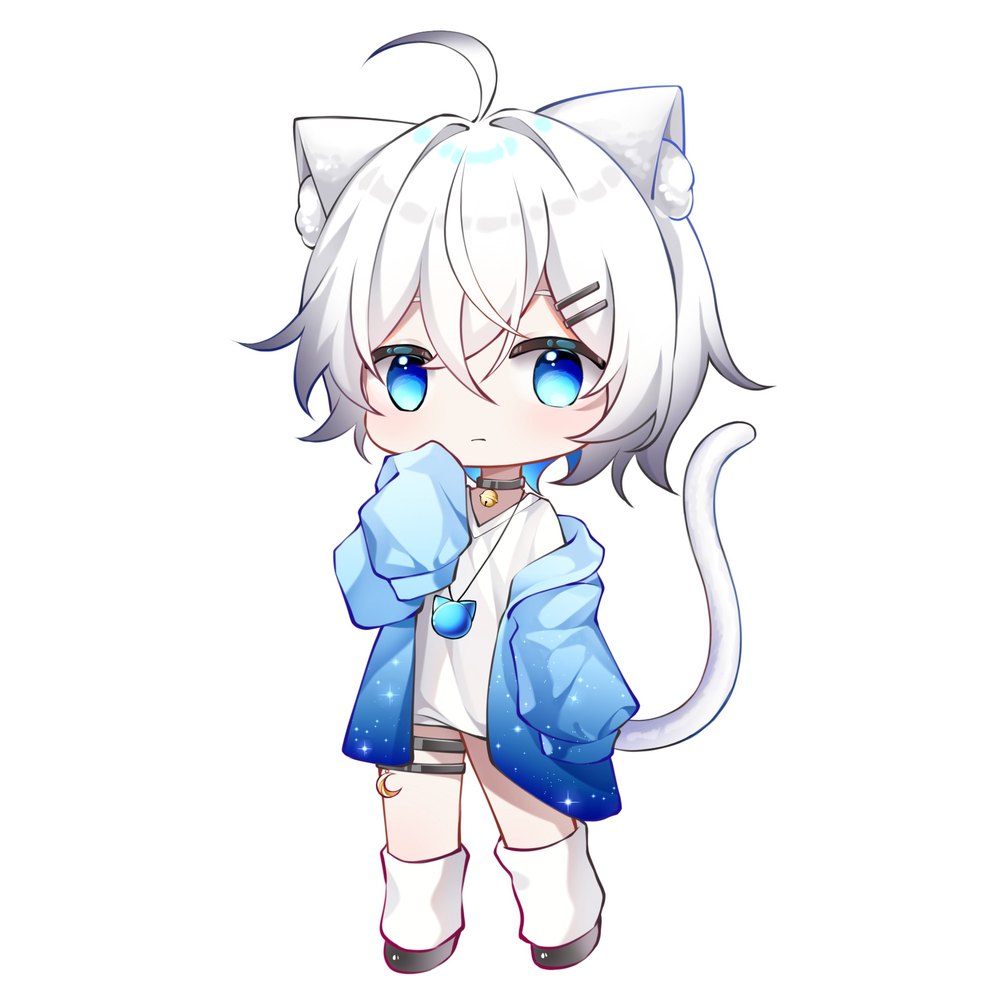
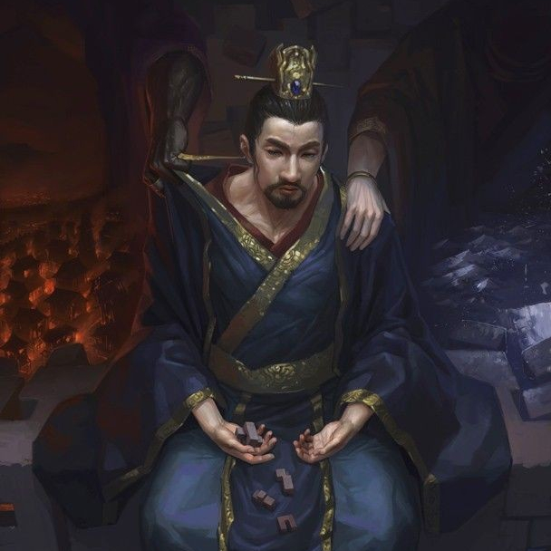

B站直播日报汇总
2026-11-22 · 官方 0/15 开播 · KOL 8/13 开播
8/28
开播间
58h08m
累计时长
92,595
有效弹幕（原始 134,249，剔除 41,654）
📊 当日全场舆情（8 间开播 · 三维打点）
风险等级：低（0.6%） 判定 v3.2-m5.0
有效弹幕 92,595（剔噪声 0） ｜
正向率 12.9% ｜ 负向率 16.4% ｜
判定来源：consensus 90108（97%）多源 2487（3%）
① 话题分布
游戏 10945（12%） ｜ 泛讨论 81650（88%）
正面中性负面
游戏话题game12%
正 1860·中 5692·负 339310,945 条
泛讨论话题meta88%
正 10103·中 59795·负 1175281,650 条
游戏话题 · 明细
角色30%3,235
玩法22%2,436
商业化17%1,855
剧情12%1,267
音乐音效7%747
竞品对比6%621
版本节奏4%457
技术3%327
展开其余 5 个话题收起▾
泛讨论话题 · 明细
泛讨论98%79,717
主播KOL1%928
社区生态1%671
厂商动态0%334
展开其余 1 个话题收起▾
② 情感分布
偏正面 11963（13%）中性 65487（71%）偏负面 15042（16%）负面为主 103（0%）
③ 风险标签
高 135 ｜ 中 410 ｜ 低 9 ｜ 无 92041
社区互撕/引战 370泄露/开盒 72涉政敏感 62产品事故 29性别对立 17阶级/地域对立 9
代表性评论
- [泛讨论]“健身就嗯！”
- [角色]“健身来了！”
- [玩法]“GTA6跟冰一样 停不下来”
- [商业化]“强颜欢笑”
- [剧情]“离完美结局条件还很远[dog]”
⚠️ 风险弹幕样本（共 545 条，展示前 6）
- · [社区互撕/引战] 我红温了[热]
- · [社区互撕/引战] 爆破鬼棉
- · [泄露/开盒] pc要破解了[妙]
- · [泄露/开盒] 破解无所谓的。后面会出线上模式。
- · [涉政敏感] 还有没有好心路人制裁一下
- · [涉政敏感] 别说敏感词
口径：三维正交打点（话题/情感/风险互不耦合）。有效弹幕 = 剔除抽奖刷屏/纯社交噪声后的弹幕。
风险率 = risk_level∈(中,高) 弹幕数 ÷ 有效弹幕数。分歧/反讽/风险候选 2487 条；真实LLM覆盖 0 条，规则兜底复核 870 条。
游戏直播热度看板
快照时间：2026-11-22（历史补跑） ｜ 全天开播量=24h去重累计 ｜ 官方关注数/Top3/头部主播=今日实时 ｜ 开播趋势=开播量日环比 ｜ 数据来源：B站直播分区API
今日争议 TOP3（按游戏 / 按直播间）
口径：按话题（topic）聚合争议，看情感分歧与风险条数；兜底话题「综合讨论」不单独成争议。
按游戏聚合
TOP1
鸣潮 · 泛讨论
围绕【泛讨论】出现明显分歧（11249条，正2864/负2105，含 22 条风险弹幕）。
36594
TOP2
原神 · 泛讨论
围绕【泛讨论】出现明显分歧（12710条，正1459/负1956，含 17 条风险弹幕）。
31231
TOP3
明日方舟 · 泛讨论
围绕【泛讨论】出现明显分歧（10147条，正1004/负1379，含 2 条风险弹幕）。
10147
按直播间聚合
TOP1
乃琳Queen · 泛讨论
围绕【泛讨论】出现明显分歧（25345条，正2757/负2939，含 3 条风险弹幕）。
25345
TOP2
热爱游戏张大狗 · 泛讨论
围绕【泛讨论】出现明显分歧（11249条，正2864/负2105，含 22 条风险弹幕）。
11249
TOP3
棉花大哥哥 · 泛讨论
围绕【泛讨论】出现明显分歧（12710条，正1459/负1956，含 17 条风险弹幕）。
12710
官方直播间
开播 0/15 ｜ 弹幕 0 条 ｜ 时长 0h00m
原神（21987615）
👥 20,971,531 关注未开播
崩坏：星穹铁道（27263119）
👥 12,560,323 关注未开播
绝区零（32805602）
👥 8,151,548 关注未开播
明日方舟（5555734）
👥 7,654,666 关注未开播
鸣潮（27354807）
👥 5,409,092 关注未开播
明日方舟终末地（1921300321）
👥 4,922,461 关注未开播
网易第五人格手游（5887574）
👥 4,881,685 关注未开播
异环（1890951177）
👥 3,039,482 关注未开播

暗区突围（24807588）
👥 2,673,266 关注未开播
待核房间_26284671（26284671）
👥 1,187,678 关注未开播
望月（1892451545）
👥 738,816 关注未开播
遗忘之海（1974514268）
👥 573,034 关注未开播
伊莫（1746235011）
👥 434,266 关注未开播
归环（1992270167）
👥 299,875 关注未开播

待核房间_1942243734（1942243734）
👥 51,850 关注未开播
KOL 直播间
开播 8/13 ｜ 弹幕 92,595 条 ｜ 时长 58h08m

你的影月月（21414905）👥 10,714,490 关注
📡 开播 🔥 热门 68 🛡️ 风险 低（0.0%）🏷️ KOL标签：商单频率：中 ｜ 方向：原神 / 星铁 / 绝区零 / 攻略评测
🎮 主内容：原神
🏷️ Top话题：原神(10) / 绝区零(4) / 配音(3)
💬 弹幕信号：
偏正面 24110%中性 145060%偏负面 70830%负面为主 10%
📊 舆情三维（话题 / 情感 / 风险）
有效 2400
🟢低 0.0%
话题分布
正面中性负面
游戏话题game10%
正 31·中 108·负 97236 条
泛讨论话题meta90%
正 210·中 1342·负 6122,164 条
游戏话题 · 明细
玩法28%67
商业化27%64
角色21%49
版本节奏8%20
音乐音效8%18
剧情3%8
技术2%6
竞品对比2%4
展开其余 5 个话题收起▾
泛讨论话题 · 明细
泛讨论98%2,124
主播KOL2%35
厂商动态0%5
代表性评论
- [泛讨论] “晚上早呀”
- [玩法] “怎么还有一个手机？双线操作？这么忙吗？”
- [商业化] “非常简单”
争议焦点：TOP1 泛讨论 2124TOP2 玩法 67TOP3 商业化 64
围绕【泛讨论】出现明显分歧（2124条，正202/负607）。
魔法Zc目录（3044248）👥 3,476,347 关注
📡 开播 🔥 火爆 84 🛡️ 风险 低（0.2%）🏷️ KOL标签：商单频率：中 ｜ 方向：明日方舟 / 终末地 / 星铁 / 直播反应
🎮 主内容：终末地
🏷️ Top话题：角色(22) / 战斗(15) / 终末地(10)
💬 弹幕信号：
偏正面 124911%中性 880375%偏负面 171715%负面为主 80%
📊 舆情三维（话题 / 情感 / 风险）
有效 11777
🟢低 0.2%
话题分布
正面中性负面
游戏话题game13%
正 233·中 922·负 3321,487 条
泛讨论话题meta87%
正 1016·中 7881·负 139310,290 条
游戏话题 · 明细
玩法39%584
角色24%359
商业化9%140
竞品对比9%132
音乐音效6%97
剧情6%89
版本节奏4%61
技术2%25
展开其余 5 个话题收起▾
泛讨论话题 · 明细
泛讨论99%10,147
主播KOL1%66
厂商动态1%60
社区生态0%17
展开其余 1 个话题收起▾
代表性评论
- [泛讨论] “zskbl”
- [玩法] “依旧理智液”
- [角色] “记得刷新武器的珠子”
争议焦点：TOP1 泛讨论 10147TOP2 玩法 584TOP3 角色 359
围绕【泛讨论】出现明显分歧（10147条，正1004/负1379，含 2 条风险弹幕）。
企鹅带带北极熊（23121424）👥 3,281,697 关注
📡 开播 🔥 火爆 80 🛡️ 风险 低（0.1%）🏷️ KOL标签：商单频率：中 ｜ 方向：原神 / 星铁 / 绝区零 / 付费内容 / 抽卡
🎮 主内容：战斗
🏷️ Top话题：战斗(3)
💬 弹幕信号：
偏正面 10908%中性 1101977%偏负面 213715%负面为主 120%
📊 舆情三维（话题 / 情感 / 风险）
有效 14258
🟢低 0.1%
话题分布
正面中性负面
游戏话题game11%
正 129·中 789·负 6981,616 条
泛讨论话题meta89%
正 961·中 10230·负 145112,642 条
游戏话题 · 明细
玩法45%734
角色28%450
商业化8%128
技术5%82
剧情5%74
版本节奏4%62
音乐音效3%52
竞品对比2%34
展开其余 5 个话题收起▾
泛讨论话题 · 明细
泛讨论98%12,452
主播KOL1%169
社区生态0%11
厂商动态0%10
展开其余 1 个话题收起▾
代表性评论
- [泛讨论] “你甘心吗”
- [玩法] “不是改变，是撕裂天梯环境”
- [角色] “猫是可爱的，狼是很帅的。就是说，孤独又可爱又帅。”
争议焦点：TOP1 泛讨论 12452TOP2 玩法 734TOP3 角色 450
围绕【泛讨论】出现明显分歧（12452条，正945/负1413，含 3 条风险弹幕）。
棉花大哥哥（103）👥 2,723,587 关注
📡 开播 🔥 火爆 80 🛡️ 风险 低（0.3%）🏷️ KOL标签：商单频率：高 ｜ 方向：泛二游直播 / 米哈游系 / 鸣潮 / 终末地 / 社区节奏
🎮 主内容：剧情
🏷️ Top话题：剧情(89) / 主线(47) / 角色(16)
💬 弹幕信号：
偏正面 183012%中性 1029669%偏负面 280519%负面为主 180%
📊 舆情三维（话题 / 情感 / 风险）
有效 14949
🟢低 0.3%
话题分布
正面中性负面
游戏话题game13%
正 340·中 826·负 8342,000 条
泛讨论话题meta87%
正 1490·中 9470·负 198912,949 条
游戏话题 · 明细
商业化35%693
角色25%500
剧情14%289
玩法12%231
竞品对比5%96
音乐音效4%89
技术4%72
版本节奏2%30
展开其余 5 个话题收起▾
泛讨论话题 · 明细
泛讨论98%12,710
主播KOL1%161
社区生态0%63
厂商动态0%15
展开其余 1 个话题收起▾
代表性评论
- [泛讨论] “健身就嗯！”
- [商业化] “强颜欢笑”
- [角色] “健身来了！”
争议焦点：TOP1 泛讨论 12710TOP2 商业化 693TOP3 角色 500
围绕【泛讨论】出现明显分歧（12710条，正1459/负1956，含 17 条风险弹幕）。
神奇陆夫人（115）👥 1,751,222 关注
📡 开播 🔥 热门 77 🛡️ 风险 低（0.1%）🎮 主内容：角色
🏷️ Top话题：角色(8) / 终末地(5) / 主线(5)
💬 弹幕信号：
偏正面 48811%中性 336576%偏负面 54612%负面为主 20%
📊 舆情三维（话题 / 情感 / 风险）
有效 4401
🟢低 0.1%
话题分布
正面中性负面
游戏话题game10%
正 73·中 275·负 88436 条
泛讨论话题meta90%
正 415·中 3090·负 4603,965 条
游戏话题 · 明细
玩法37%161
商业化20%88
角色18%79
剧情10%45
版本节奏5%22
音乐音效4%16
竞品对比3%14
技术2%11
展开其余 5 个话题收起▾
泛讨论话题 · 明细
泛讨论100%3,945
主播KOL0%15
厂商动态0%5
代表性评论
- [泛讨论] “123321”
- [玩法] “咋也没见夫人玩过明日方舟，只刷日常”
- [商业化] “绝区零前瞻pv里有满命的影画图”
争议焦点：TOP1 泛讨论 3945TOP2 玩法 161TOP3 商业化 88
围绕【泛讨论】出现明显分歧（3945条，正413/负459）。
OldBa1（529）👥 1,727,766 关注
📡 开播 🔥 热门 65 🛡️ 风险 低（0.1%）🎮 主内容：剧情
🏷️ Top话题：剧情(7) / 角色(4) / 画面(2)
💬 弹幕信号：
偏正面 42220%中性 136464%偏负面 35417%负面为主 10%
📊 舆情三维（话题 / 情感 / 风险）
有效 2141
🟢低 0.1%
话题分布
正面中性负面
游戏话题game17%
正 203·中 95·负 59357 条
泛讨论话题meta83%
正 219·中 1269·负 2961,784 条
游戏话题 · 明细
商业化41%146
角色20%71
玩法11%38
技术8%30
音乐音效8%28
剧情7%26
版本节奏4%13
竞品对比1%5
展开其余 5 个话题收起▾
泛讨论话题 · 明细
泛讨论98%1,745
主播KOL2%32
社区生态0%5
厂商动态0%2
展开其余 1 个话题收起▾
代表性评论
- [泛讨论] “拿来吧你”
- [商业化] “欧气附体”
- [角色] “都不喜欢露西亚这角色，说太作了，杰森纯纯力工擦屁股[笑哭]”
争议焦点：TOP1 泛讨论 1745TOP2 商业化 146TOP3 角色 71
围绕【泛讨论】出现明显分歧（1745条，正211/负290，含 1 条风险弹幕）。
乃琳Queen（22625027）👥 1,132,718 关注
📡 开播 🔥 火爆 89 🛡️ 风险 低（0.1%）🎮 主内容：鸣潮
🏷️ Top话题：配音(101) / 鸣潮(54) / 角色(54)
💬 弹幕信号：
偏正面 321811%中性 2134776%偏负面 348712%负面为主 310%
📊 舆情三维（话题 / 情感 / 风险）
有效 28083
🟢低 0.1%
话题分布
正面中性负面
游戏话题game9%
正 404·中 1479·负 5472,430 条
泛讨论话题meta91%
正 2814·中 19868·负 297125,653 条
游戏话题 · 明细
角色42%1,017
音乐音效15%362
剧情13%324
玩法12%288
商业化11%268
版本节奏4%102
竞品对比2%55
技术1%14
展开其余 5 个话题收起▾
泛讨论话题 · 明细
泛讨论99%25,345
主播KOL1%219
厂商动态0%46
社区生态0%43
展开其余 1 个话题收起▾
代表性评论
- [泛讨论] “小猪来小猪来”
- [角色] “来了来了”
- [音乐音效] “open the door”
争议焦点：TOP1 泛讨论 25345TOP2 角色 1017TOP3 商业化 268
围绕【泛讨论】出现明显分歧（25345条，正2757/负2939，含 3 条风险弹幕）。
热爱游戏张大狗（7282964）👥 76,200 关注
📡 开播 🔥 热门 78 🛡️ 风险 低（3.0%）🏷️ KOL标签：商单频率：中 ｜ 方向：鸣潮 / 终末地 / 异环 / 泛二游舆情
🎮 主内容：鸣潮
🏷️ Top话题：鸣潮(390) / 原神(322) / 角色(206)
💬 弹幕信号：
偏正面 342523%中性 784354%偏负面 328823%负面为主 300%
📊 舆情三维（话题 / 情感 / 风险）
有效 14586
🟢低 3.0%
话题分布
正面中性负面
游戏话题game16%
正 447·中 1198·负 7382,383 条
泛讨论话题meta84%
正 2978·中 6645·负 258012,203 条
游戏话题 · 明细
角色30%710
剧情17%412
玩法14%333
商业化14%328
竞品对比12%281
版本节奏6%147
技术4%87
音乐音效4%85
展开其余 5 个话题收起▾
泛讨论话题 · 明细
泛讨论92%11,249
社区生态4%532
主播KOL2%231
厂商动态2%191
展开其余 1 个话题收起▾
代表性评论
- [泛讨论] “你电脑声一响我就知道了[汤圆]”
- [角色] “皮套太大了”
- [社区生态] “不关注老米”
争议焦点：TOP1 泛讨论 11249TOP2 角色 710TOP3 社区生态 532
围绕【泛讨论】出现明显分歧（11249条，正2864/负2105，含 22 条风险弹幕）。
卡特亚（1455691）
👥 3,454,444 关注未开播
🏷️ KOL标签：商单频率：中 ｜ 方向：原神 / 星铁 / 绝区零 / 鸣潮 / 直播反应
嘉然今天吃什么（22637261）
👥 1,874,389 关注未开播
贝拉kira（22632424）
👥 742,721 关注未开播
屑芙蒂（5805449）
👥 262,594 关注未开播
🏷️ KOL标签：商单频率：低 ｜ 方向：NIKKE / 胜利女神 / 垂直攻略 / 角色解析

黑衣侦探（8224585）
👥 57,127 关注未开播
🏷️ KOL标签：商单频率：中 ｜ 方向：鸣潮 / 异环 / 终末地 / 泛二游节奏
开播 UP 详情数据
点击上方卡片会跳转到本页内对应详情；详情内容已内嵌在同一个 HTML 中。
自动生成 | 数据来源：腾讯云监控 + 本地CSV | 2026-11-22